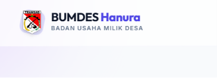
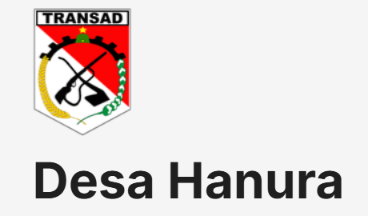
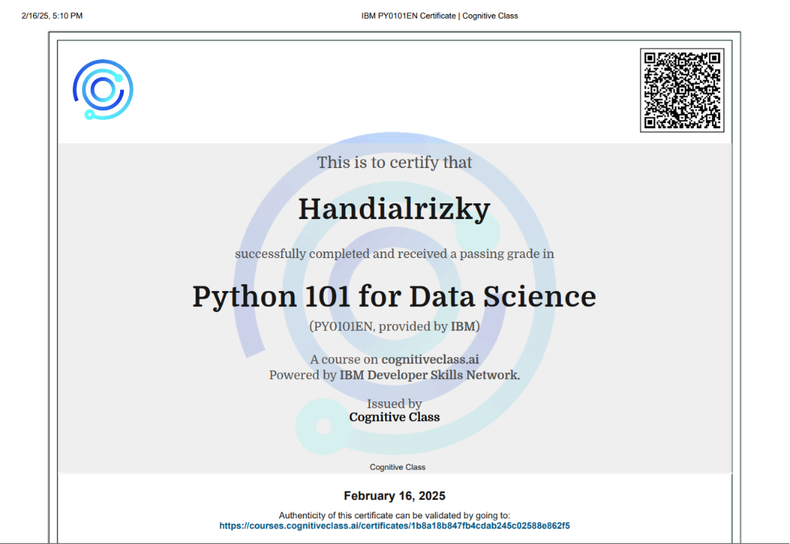

Halo, saya
HANDIALRIZKY
Mahasiswa S1 Teknik Informatika ITERA
Berdedikasi untuk menerapkan solusi teknologi inovatif dalam lingkungan profesional.
Tentang Saya
Mahasiswa aktif S1 Teknik Informatika ITERA angkatan 2023, memiliki pemahaman kuat dalam algoritma, struktur data, serta pengalaman praktis dalam pengujian keamanan aplikasi menggunakan metode blackbox testing.
Aktif berorganisasi dalam mengelola proyek tim dan koordinasi teknis. Berdedikasi untuk menerapkan solusi teknologi inovatif dalam lingkungan profesional.
Pengalaman Organisasi
Panitia Dokumentasi Musyawarah Besar HMIF ITERA
Mengelola dokumentasi sistematis seluruh rangkaian Musyawarah Besar sebagai arsip resmi serta berkolaborasi dengan tim publikasi dalam penyampaian informasi melalui konten visual.
Panitia Pelaksana Penyambutan Mahasiswa Baru 2025
Berperan sebagai tim inti dalam merancang konsep serta mengelola operasional teknis acara untuk memastikan seluruh rangkaian penyambutan mahasiswa baru 2025 berjalan sesuai jadwal.
Kemampuan
Technical Skill
- Pemrograman: Python (Tingkat Menengah), C++, Java, Bash Scripting
- Keamanan Siber: Web Fuzzing (ffuf), Blackbox Testing, Analisis Kriptografi
- Pengetahuan Khusus: Optimasi Algoritma, Pemrograman Berorientasi Objek
Soft Skill
- Komunikasi & Presentasi Publik
- Manajemen Tim
- Komunikasi Profesional B. Inggris (Intermediate-Advanced)
- Adaptasi & Problem Solving
- Kolaborasi & Kerja Tim
Pencapaian

Website BUMDES Hanura
Membantu pembuatan web Badan Usaha Milik Desa (BUMDES), digitalisasi proses pendataan warga, transaksi, dan pencatatan data BUMDES.

Website Utama Desa Hanura
Membantu pembuatan dan optimalisasi website utama Desa Hanura menggunakan platform CMS WordPress.

Data Analytics
Menyelesaikan pelatihan intensif Data Analytics, mencakup pemrosesan data, visualisasi, dan pengambilan keputusan berbasis data.

Python 101
Mendapatkan sertifikasi dasar pemrograman Python, berfokus pada struktur data, algoritma dasar, dan otomatisasi.